Visual tour
This section walks you through the UI of Neo4j Browser.
2. Sidebar
The sidebar contains a set of drawers to set up the environment for graph management and explore your data.
2.1. Database Information
The Database Information drawer provides information about the currently used database, the current user’s roles, the Neo4j DBMS version, and some helpful DBMS administrative commands.
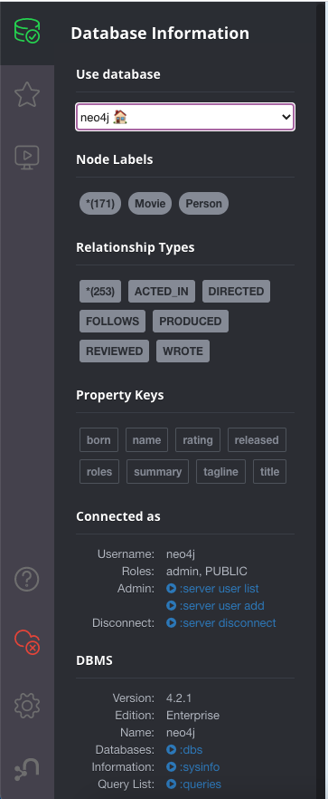
-
Use database — A dropdown menu, where you can select the database you want to work with.
-
Node Labels, Relationship Types, and Property keys — List the Node Labels, Relationship Types, and Property keys contained in that database, presented in an alphabetized order and displayed in groupings of 50. Clicking any one of those options runs a quick query to show you a sample of the graph with those elements.
-
Node Counts and Relationship counts — Displayed in parentheses after the *.
Note that the counts stop updating automatically on big graphs for users who don’t have access to all data, see Node and relationship counts with role-based access control.
-
Connected as — Shows the current user and their roles and the Cypher command to disconnect from the server. If the current user has an administrative role, two more options are available:
:server user addand:server user list. For more information about user’s built-in roles and the default privileges, see Operations Manual → Built-in roles. -
DBMS — Provides information about the Neo4j version and edition, and some helpful DBMS administrative commands:
-
:dbs— List all databases available for the current user. -
:sysinfo— Display data about the Neo4j system, such as store size, ID allocation, page cache, transactions, and databases (name, address, role, status, default database, and errors). -
:queries— List all currently running queries on the server.
-
2.2. Favorites
The Favorites drawer is where you keep your bookmarked queries and commands.
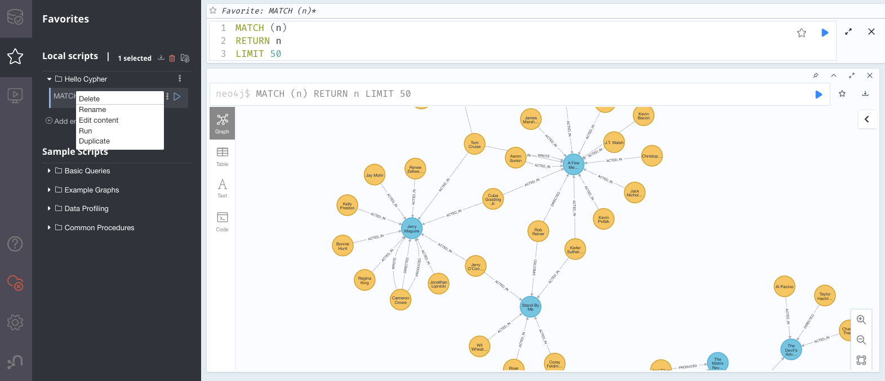
2.2.1. Save a query as a favorite
You can save Cypher queries and commands as favorites by "starring" them. Use the Add empty favorite option to open an empty script in the Cypher editor, then write the query that you want to bookmark. Clicking the Save as Favorite icon to the right of the editor adds the query to your Favorites list in the left-side menu. All favorites are stored in your local browser storage and are centric to the user/browser who has recorded those favorites. Clearing your Browser cache removes all your local favorites.
|
You can save your favorites, settings, and styles in the cloud with Neo4j Browser Sync. |
2.2.2. Run a favorite
To run one of your favorites, click the left-side menu Favorites, choose the query, and run it.
2.2.3. Add a title to a favorite
The first line of the Cypher query or command is used to name your favorite.
To provide a title or helpful info to your favorite, you can use a comment //comment above your query.
The Favorites menu uses this comment to name the saved query.
//Hello Cypher
MATCH (n)
RETURN n
LIMIT 1002.2.4. Organize your favorites
Creating folders can help organize your favorites. You can rearrange them by dragging and delete them if they are no longer useful.
2.2.5. Sample Scripts
There are several built-in favorites, which can help you manage and explore your data.
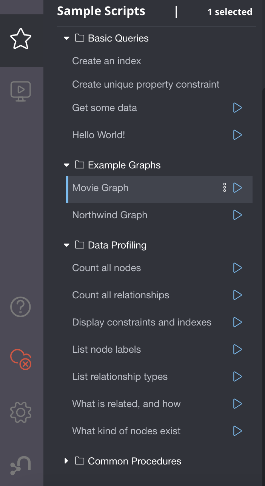
-
Basic Queries contains simple queries to get you started with Neo4j. For example, clicking and running the Get Some Data query executes the statement
MATCH (n) RETURN n LIMIT 100, which fetches some nodes. -
Example Graphs contains queries that run the built-in guides The Movie Graph and The Northwind Database. For more information on the Neo4j Browser built-in guides, see Guides.
-
Data Profiling contains queries that you can use to collect statistics and produce informative summaries about the underlying data. For example, clicking and running the What is related, and how query executes the procedure
CALL db.schema.visualization(), which shows the graph data model (graph schema). -
Common Procedures contains a few Neo4j procedures, two of which list all available Neo4j functions and procedures.
2.3. Project Files
|
The Project files tab is Neo4j Desktop specific. |
Project files allow you to save queries, guides, and other scripts, as Cypher files. Unlike favorites, which are saved in your local browser storage, project files are project-specific and are actual files stored in the project directory on your hard drive. All save files are listed under the project they refer to. For more information, see Neo4j Desktop Manual → Files.
2.4. Guides
The Neo4j Browser Guides drawer provides many interactive guides for learning concepts and tools with Neo4j. Some of them come with Neo4j Browser out-of-the-box, no matter what system or installation you are using.
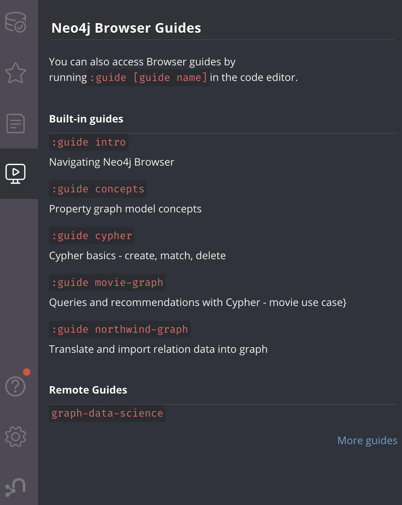
| Guide command | Description |
|---|---|
|
Neo4j Browser User Interface. |
|
Basic property-graph concepts to get you going. |
|
Cypher basics - create, match, patterns. |
|
The Movie Graph, a mini graph model of connections between actors and movies. |
|
The Northwind Database, a classic use case of RDBMS to graph with import instructions and queries. |
|
There are also other Neo4j Browser guides created by Neo4j staff and community members to help others learn Neo4j or how to use the tools in its ecosystem.
One of them is |
2.5. Help & Learn
The Help & Learn drawer contains useful commands, links to documentation, notifications, and a send feedback button.
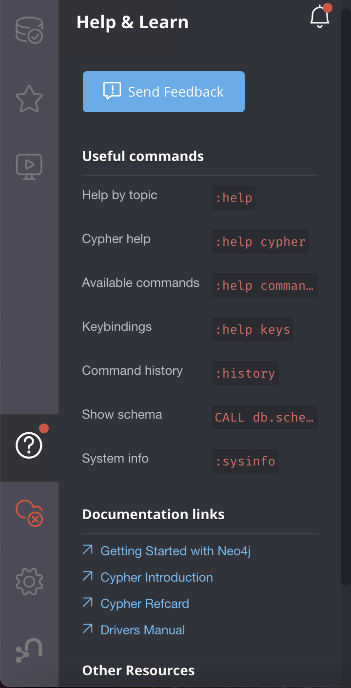
2.5.1. Useful commands
Most of the commands in the Useful commands tab work as an entry point to a help page, where you can find a lot of handy commands and keyboard shortcuts you can use in Neo4j Browser.
| Command | Description |
|---|---|
|
Help System |
|
Provide a list of the most useful Cypher commands, with an overview and a quick way to find help. |
|
List all available |
|
List some of the Cypher editor keyboard shortcuts. |
|
Display the most recently executed statements and commands. You can click a block shown in the history result to bring it into the editor. The command history is persisted across Browser restarts. |
|
Show database schema. |
|
Display data about the Neo4j system, such as store size, ID allocation, page cache, transactions, and databases (name, address, role, status, default database, and errors). |
For the complete list of all Neo4j Browser commands, see Command reference.
2.6. Browser Settings
The Browser Settings drawer contains configurations related to the UI, result frames, and graph visualization.
You can adjust some of them in place, for example, Enable multi statement query editor, Initial command to execute, graph limits, result limits, or by using the :config command.
For the full list of the Neo4j Browser settings and how to adjust them in the Browser and globally, see Browser settings.
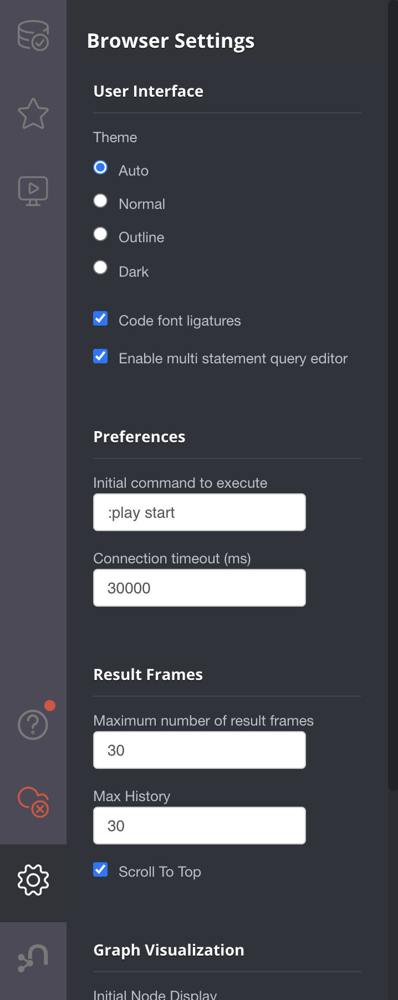
3. Cypher editor
The Cypher editor is the primary interface for entering and running Cypher queries and commands.
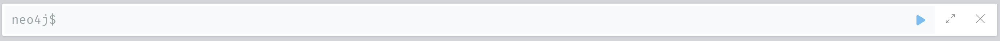
|
From Neo4j Browser 4.2.4, the Cypher editor is based on Monaco Editor, the code editor that powers Visual Studio Code (VS Code). Even though it is the same text editor as VS Code, it is not the entire VS Code package. For example, plugins are not included and are not possible to implement. |
Some of the Cypher editor features include:
-
Cypher queries to work with graph data.
-
The editor can be instantiated several times, which allows you to edit the query inside the result frame and re-run it.
-
Single-line editing for brief queries or commands.
-
Multi-line editing for long queries or commands.
-
REST request commands (
:GET,:POST,:PUT, and:DELETE). -
Syntax highlighting:
-
A smart highlight of matching pairs around the current position of the cursor, for example, matching brackets, braces, and parenthesis.
-
Matching pairs are auto-closed.
-
A smart highlight of identical words on a word click.
-
Words, such as attributes, anon name, and values, are highlighted in different colors.
-
Any punctuation, such as parenthesis and comma, has a slightly different color than text.
-
-
Quick comment/uncomment.
-
Indentation and folding.
You can fold an indented code snippet. This way, you can hide lots of code. -
Search and replace.
For example, you can search for a particular label (e.g.,: Actor) and replace all its occurrences (with: Person). -
Autocomplete for browser commands can autocomplete several words.
-
Warnings are displayed with a squiggly line that you hover, and you get a pop-up.
-
Client-side commands like
:helpfor other operations. -
Command palette (F1) with all of the available commands with their shortcuts. The currently available commands can be turned on and off.
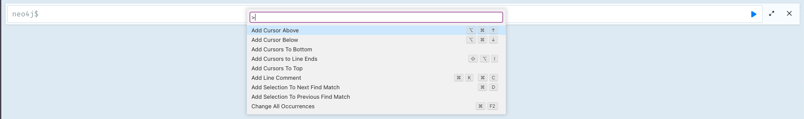
| Description | Keyboard shortcut (Mac OS) | Keyboard shortcut (Windows and Linux) |
|---|---|---|
Select highlighted identical words one by one. |
command + D |
Ctrl + D |
Select all highlighted identical words. |
command + shift + L |
Ctrl + shift + L |
Move a query line up and down. |
ALT + arrow |
ALT + arrow |
Delete a query line. |
command + shift + K |
Ctrl + shift + K |
Add multiple cursors, if you want to add several lines at the same time. |
command + ALT + arrow |
Ctrl + ALT + arrow |
Toggle comment on the currently selected row(s). |
command + / |
Ctrl + / |
Search and replace. |
command + F |
Ctrl + F |
Run a query. |
command + enter |
Ctrl + Enter |
Switch to multi-line editing. |
Shift + enter |
Shift + Enter |
Move focus to the Cypher editor. |
/ |
/ |
Toggle the Cypher editor to full screen. |
ESC |
ESC |
|
For more information about keyboard shortcuts, use the command |
4. Reusable result frames
Neo4j Browser reusable result frames allow you to edit the query of an existing result directly in the result frame and re-run it to update the result in situ.
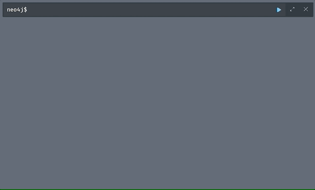
You can also use Cmd/Ctrl + click to send it back to the main editor and re-run it from there.
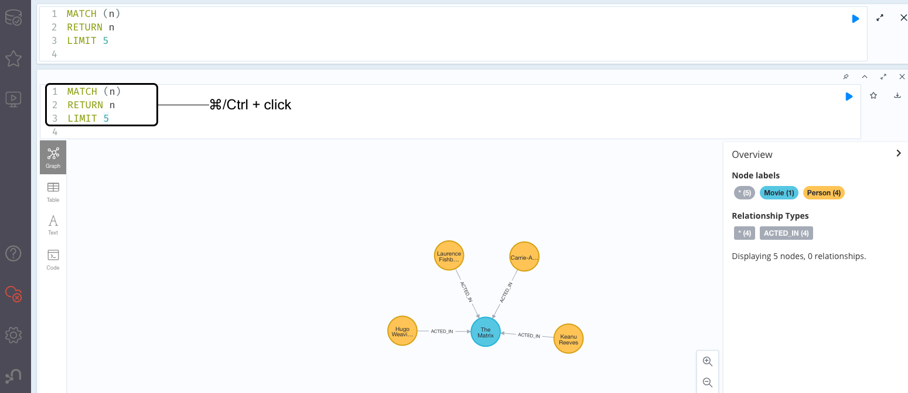
Each reusable frame maintains its own local history of commands and updates the main one in the Cypher editor, should you need to instantiate a new result frame from there.
4.1. Result frame views
Neo4j Browser supports different result frame views to suit your needs:
-
Graph — Display the result as nodes and relationships and allow styling to be configured.
-
Table — Display the result as JSON formatted rows.
-
Text — Display the result as a plain text table.
-
Code — Display the submitted request, the Neo4j Server version and address, and the response.
For more details on the different ways of viewing data in Neo4j Browser, see Result frames.
4.2. Stream
A stream is a scrolling series of result frames.
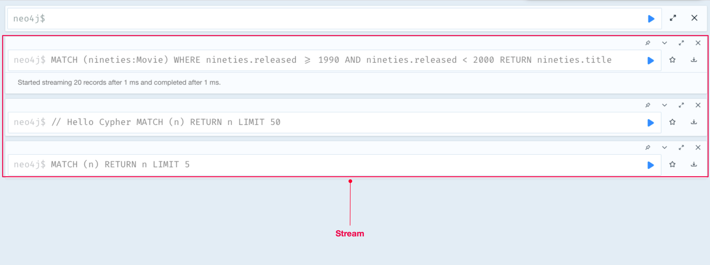
A reusable result frame is created for each command execution, added to the top of the stream to create a scrollable collection in reverse chronological order.
You can expand and collapse the result frames using the Collapse icon.
To remove all the frames from the stream, use the :clear command.
Browser settings that maybe useful for you are the maximum number of result frames to display (maxFrames) and the size of the command and statement history (maxHistory).
When reached, old frames and history entries get retired.
For more information on how to adjust Browser Settings, see Browser settings.
Was this page helpful?